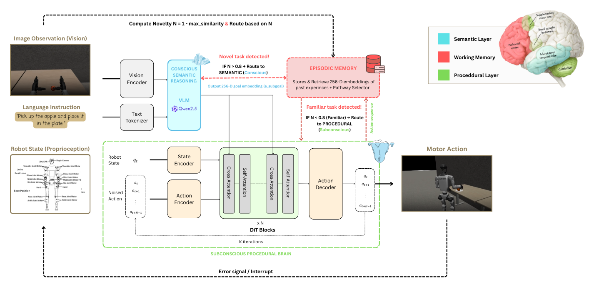

Novel regime
Planning-heavy execution
Full semantic pipeline active. High novelty, multiple VLM calls, conscious routing throughout.
Deployment-time skill consolidation in humanoid loco-manipulation
via a triune semantic–episodic–procedural control hierarchy.
Figure 1 — System Architecture

Overall proposed system hierarchical architecture. Semantic Layer (blue, 1 Hz): Qwen2.5-VL-Instruct-7B receives RGB frames and the language goal g, producing scene graph G_t, constrained plan P, verified 256-d subgoal embedding z_t, and a continuous supervisory monitor signal. Episodic Layer (red, 10 Hz): a FAISS exact inner-product index computes novelty N_t and the hysteresis router selects among Conscious, Transitional, and Subconscious pathways. Procedural Layer (green, 50 Hz): a 32-layer DiT denoises a 4-step action chunk tracked by a 500 Hz computed-torque controller. Red dashed arrows denote the semantic interrupt path triggered by anomaly detection; green dashed arrows denote the subconscious bypass that removes VLM deliberation for familiar tasks.
Humanoid robotics increasingly relies on vision-language-action systems to map natural-language instructions and visual observations into embodied behavior. However, many such systems remain deployment-inefficient because familiar tasks continue to be executed as if they were novel. This thesis addresses that perpetual-novice bottleneck in whole-body loco-manipulation by asking whether a humanoid controller can transition from deliberate semantic control to faster automatic execution during deployment without retraining the underlying motor policy.
The proposed system is a triune-inspired routed architecture with three concurrent layers: a semantic reasoning layer for planning and supervisory monitoring, an episodic memory layer for familiarity estimation and pathway routing, and a procedural control layer for high-frequency whole-body execution. The architecture is implemented on a Unitree G1 humanoid in MuJoCo and evaluated through repeated learning, forced-pathway separation, regime-split ablations, transfer experiments, and internal telemetry analysis.
The results show that repeated experience changes how cognition is allocated within the controller. On the anchor apple-to-plate benchmark, mean episode duration drops from 440.47 s in the early learning window to 225.42 s in the late window, yielding a 1.95x speed ratio while late-window success reaches 100%. Forced-pathway evaluation shows that deliberate execution requires 262.27 +/- 6.92 s whereas automatic execution requires 188.54 +/- 4.96 s, demonstrating that the timing advantage arises from removing semantic planning latency rather than from hidden policy adaptation. Regime-split ablations further show that the integrated architecture is most useful under novelty and familiar replay, while perturbation-heavy cases remain a current boundary.
The thesis contributes a routed multi-rate control architecture, a novelty-driven mechanism for conscious-to-automatic transition, and an empirical demonstration of deployment-time skill consolidation in humanoid loco-manipulation. It also identifies two concrete limitations that define the next engineering targets: fast perturbation recovery and geometry-aware episodic transfer.
Four protocols · six hypotheses · all key claims confirmed
Episode duration compressed 440 s → 225 s over 40 linked executions. Power-law exponent α = 0.390, inside the human motor-learning range [0.3, 0.5]. No policy retraining.
Deliberate: 262.3 ± 6.9 s. Automatic: 188.5 ± 5.0 s. Cohen's d = 12.24, p = 8×10â»â´âµ (Welch t-test, N = 30 per condition). Success rates statistically equivalent (p = 0.612).
Full system SR = 1.00 (novel), 0.9375 (familiar). Policy-only baseline: 0.875 (novel), 0.6875 (familiar). Episodic routing adds significant value beyond the raw frozen policy.
Cube-to-tray recovered 0% → 66.7% after one support episode. Novelty: 0.87 → 0.60. Broad five-task stress test defines the current representational boundary of the episodic router.
Executed rollouts · Unitree G1 · MuJoCo · confirmatory evaluation
Full semantic pipeline active. High novelty, multiple VLM calls, conscious routing throughout.
Episodic routing bypasses semantic planning. Semantic duty cycle: 0%. Same policy — different route.
No semantic or episodic layers. Fast but stateless — SR drops to 68.75% in familiar regime.
Full system under forced-monitor conditions. Current recovery-speed architectural boundary.